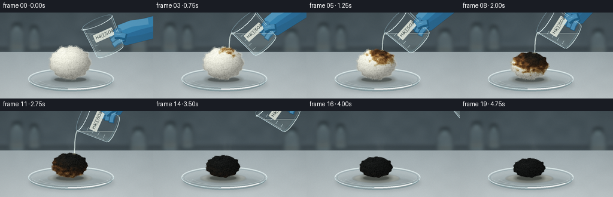
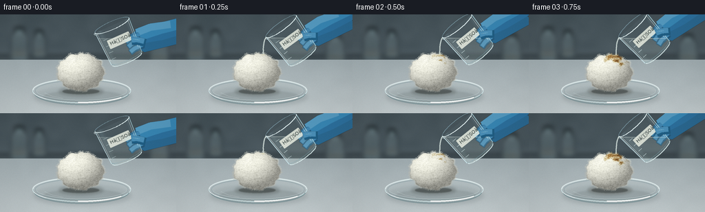

CODING AGENTS AS PIXEL WORLD MODELS
traex/GPT-6.1-Sol · phygen_154
点击播放 · 原生 RGB 像素
逐轮保存的候选
回放视频、检查图与代码变化。
每份候选均可单独播放。实际图片检查记录在下方工具轨迹中。
候选 01播放与检查图
点击播放 · 原生 RGB 像素

展开代码变化
--- 上一保存版本
+++ 本次保存版本
@@ -0,0 +1,369 @@
+"""Procedural RGB macro timelapse, rendered using only numpy and Pillow."""
+from pathlib import Path
+import math
+import numpy as np
+from PIL import Image, ImageDraw, ImageFilter, ImageFont
+import artifact_io
+
+ROOT = Path(__file__).resolve().parent
+W,H,S=256,144,3
+WW,HH=W*S,H*S
+rng=np.random.default_rng(154)
+Y,X=np.mgrid[0:HH,0:WW].astype(np.float32)
+x=X/S;y=Y/S
+
+def noise(seed, size, shape=(HH,WW)):
+ rr=np.random.default_rng(seed)
+ ar=(rr.random((size[1],size[0]))*255).astype(np.uint8)
+ return np.asarray(Image.fromarray(ar).resize((shape[1],shape[0]),Image.Resampling.BICUBIC),dtype=np.float32)/255
+
+nlarge=noise(19,(18,11));nmed=noise(20,(65,38));nfine=noise(21,(256,144))
+
+def layer():return Image.new('RGBA',(WW,HH),(0,0,0,0))
+def xy(pts):return [(float(a*S),float(b*S)) for a,b in pts]
+def ellipse(d,box,fill,outline=None,width=1):
+ d.ellipse(tuple(float(a*S) for a in box),fill=fill,outline=outline,width=max(1,round(width*S)))
+def line(d,pts,fill,width=1):d.line(xy(pts),fill=fill,width=max(1,round(width*S)),joint='curve')
+def composite(im,lay):return Image.alpha_composite(im,lay)
+
+def soft_ellipse(im,box,color,blur):
+ l=layer();ellipse(ImageDraw.Draw(l),box,color)
+ return composite(im,l.filter(ImageFilter.GaussianBlur(blur*S)))
+
+# An out-of-focus laboratory backdrop and a stationary matte worktop.
+wall=np.stack([68+16*y/H,81+16*y/H,87+17*y/H],axis=-1)
+wall+=(nlarge[...,None]-.5)*7
+bg=Image.fromarray(np.uint8(np.clip(wall,0,255))).convert('RGBA')
+l=layer();d=ImageDraw.Draw(l)
+# Background glassware, deliberately outside the focus plane.
+for cx,cy,rx,ry in [(28,49,12,21),(57,48,9,16),(231,56,13,18)]:
+ d.rounded_rectangle((int((cx-rx)*S),int((cy-ry)*S),int((cx+rx)*S),int((cy+ry)*S)),radius=5*S,fill=(136,161,164,42),outline=(175,198,198,70),width=1*S)
+ d.rectangle((int((cx-rx*.55)*S),int((cy-ry-8)*S),int((cx+rx*.55)*S),int((cy-ry)*S)),fill=(104,126,132,140))
+ ellipse(d,(cx-rx*.6,cy-ry-9,cx+rx*.6,cy-ry-5),(45,61,64,220))
+ d.rectangle((int((cx-rx*.8)*S),int((cy+1)*S),int((cx+rx*.8)*S),int((cy+ry*.6)*S)),fill=(143,144,126,40))
+line(d,[(0,61),(256,61)],(35,49,53,190),3)
+bg=composite(bg,l.filter(ImageFilter.GaussianBlur(3.4*S)))
+bench=np.stack([157+35*(y-64)/80,169+32*(y-64)/80,173+30*(y-64)/80],axis=-1)
+bench+=(nfine[...,None]-.5)*2.2+(nlarge[...,None]-.5)*3
+arr=np.asarray(bg).copy();arr[y>=66,:3]=np.uint8(np.clip(bench[y>=66],0,255));bg=Image.fromarray(arr,'RGBA')
+# Very subtle bench seam and distant highlight.
+l=layer();line(ImageDraw.Draw(l),[(0,66),(256,66)],(181,197,199,65),.6)
+bg=composite(bg,l)
+
+# Fixed material fields in cotton coordinates, so texture deforms with the ball.
+T=512
+tex0=noise(51,(16,16),(T,T));tex1=noise(52,(55,55),(T,T));tex2=noise(53,(180,180),(T,T));tex3=noise(54,(512,512),(T,T))
+# Fibers start and curl parameters, retained for all twenty frames.
+fibers=[]
+for j in range(4100):
+ u,v=rng.uniform(-1,1,2)
+ if u*u+v*v>1.01:continue
+ ang=rng.uniform(0,2*np.pi)
+ fibers.append((u,v,ang,rng.uniform(.022,.105),rng.uniform(-1.2,1.2),rng.uniform(.3,1),rng.uniform(-.3,.3)))
+edgefib=[]
+for j in range(740):
+ a=rng.uniform(0,2*np.pi)
+ edgefib.append((a,rng.uniform(.5,2.5),rng.uniform(-.8,.8),rng.uniform(.3,.9)))
+
+
+def cotton_params(t):
+ p=np.clip((t-.6)/3.9,0,1)
+ shrink=p**.85
+ rx=34.0-7.5*shrink;ry=27.0-11.0*shrink
+ return 117-1.1*shrink,111-ry,rx,ry,p
+
+
+def field(u,v):
+ iu=np.clip(((u+1.12)/2.24*(T-1)).astype(int),0,T-1)
+ iv=np.clip(((v+1.12)/2.24*(T-1)).astype(int),0,T-1)
+ return tex0[iv,iu],tex1[iv,iu],tex2[iv,iu],tex3[iv,iu]
+
+
+def reaction(u,v,t):
+ a,b,c,e=field(np.asarray(u),np.asarray(v))
+ distance=np.sqrt(((u-.3)*.69)**2+((v+.77)*.70)**2)
+ onset=.30+distance*1.64+(a-.5)*.57+(b-.5)*.22
+ return np.maximum(0,t-onset)
+
+
+def palette(age):
+ # Cellulose first becomes wet and yellow, then brown, then carbon black.
+ ages=np.array([0,.13,.32,.55,.86,1.3,2.1,4])
+ colors=np.array([[243,243,229],[225,213,172],[174,130,67],[107,66,32],[60,39,22],[30,27,22],[20,22,21],[19,21,21]],float)
+ return np.stack([np.interp(age,ages,colors[:,i]) for i in range(3)],axis=-1)
+
+
+def draw_cotton(im,t):
+ cx,cy,rx,ry,p=cotton_params(t)
+ u=(x-cx)/rx;v=(y-cy)/ry
+ theta=np.arctan2(v,u)
+ boundary=1+.027*np.sin(theta*9+.8)+.024*np.cos(theta*13+1.2)+.016*np.sin(theta*19)
+ rad=np.sqrt(u*u+v*v)/boundary
+ inside=rad<1
+ a,b,c,e=field(u,v)
+ age=reaction(u,v,t)
+ base=palette(age)
+ nz=np.sqrt(np.maximum(0,1-np.minimum(rad,1)**2))
+ # Spherical light direction from the upper left.
+ diffuse=np.clip(-u*.39-v*.56+nz*.70,0,1)
+ illumination=.57+.43*diffuse
+ illumination*=1-.11*np.clip((v-.63)*3,0,1)
+ # Multiscale wool tuft texture; increasingly porous, compact texture when charred.
+ fibers_tex=(a-.5)*13+(b-.5)*23+(c-.5)*24+(e-.5)*13
+ texture=fibers_tex*(1-.50*np.clip(age,0,1))
+ charcoal=(np.clip(age-.8,0,1.0))
+ texture+=charcoal*((b-.5)*13+(c-.5)*14)
+ rgb=base*illumination[...,None]+texture[...,None]
+ # Small smooth wet reflection in the acid-saturated fibers, not a plastic sheen.
+ spec=np.exp(-((u+.30)**2/.075+(v+.32)**2/.024))*np.clip(age*.65,0,1)*9
+ rgb+=spec[...,None]
+ rgb=np.clip(rgb,0,255)
+ l=np.zeros((HH,WW,4),np.uint8)
+ l[:,:,:3]=rgb.astype(np.uint8);l[:,:,3]=(np.clip((1-rad)*S*rx,0,1)*255).astype(np.uint8)
+ im=composite(im,Image.fromarray(l,'RGBA'))
+ # Tangled short curling fiber strokes. Subpixel linework supersampled down.
+ l=layer();d=ImageDraw.Draw(l)
+ for fu,fv,ang,length,curl,brightness,variation in fibers:
+ r=math.hypot(fu,fv)
+ if r>.982:continue
+ agef=float(reaction(np.float32(fu),np.float32(fv),t))
+ color=palette(agef)
+ z=math.sqrt(max(0,1-r*r))
+ lit=.59+.40*max(0,-fu*.39-fv*.56+z*.7)
+ cc=np.clip(color*lit+(14+brightness*16)*(1-min(agef/1.3,.75))+variation*12,0,255).astype(int)
+ pts=[]
+ for k in range(5):
+ q=k/4-.5
+ dx=length*(q*math.cos(ang)+curl*q*q*math.sin(ang))
+ dy=length*(q*math.sin(ang)-curl*q*q*math.cos(ang))
+ pts.append((cx+(fu+dx)*rx,cy+(fv+dy)*ry))
+ line(d,pts,tuple(cc)+(int(125+brightness*70),),1/S)
+ for ang,le,cu,br in edgefib:
+ shape=1+.027*math.sin(ang*9+.8)+.024*math.cos(ang*13+1.2)+.016*math.sin(ang*19)
+ fu=math.cos(ang)*shape;fv=math.sin(ang)*shape
+ agef=float(reaction(np.float32(fu),np.float32(fv),t))
+ # Most loose fibers disappear as the wet cotton compacts.
+ if agef>.65 and br<.78:continue
+ le*=1-.68*min(agef,1)
+ col=np.clip(palette(agef)*(.7+.25*max(0,-fv)) +15,0,255).astype(int)
+ px=cx+fu*rx;py=cy+fv*ry
+ pts=[(px-fu*.7,py-fv*.7),(px+fu*le*.5+cu*.4,py+fv*le*.5),(px+fu*le+cu,py+fv*le)]
+ line(d,pts,tuple(col)+(int(95+br*75),),1/S)
+ return composite(im,l)
+
+
+def dish_back(im,t):
+ im=soft_ellipse(im,(49,105,190,134),(45,62,65,38),3.0)
+ im=soft_ellipse(im,(63,111,179,129),(43,55,56,35),1.1)
+ l=layer();d=ImageDraw.Draw(l)
+ ellipse(d,(47,93,190,129),(173,199,204,23),(210,231,233,150),.9)
+ ellipse(d,(51,96,186,126),(206,225,226,27),(105,139,145,105),.6)
+ # Back half of the lip and faint lower glass wall.
+ d.arc((47*S,93*S,190*S,128*S),180,360,fill=(230,243,243,200),width=2*S)
+ d.arc((49*S,96*S,188*S,132*S),3,174,fill=(90,118,123,110),width=1*S)
+ # Fine light reflection on the glass bottom.
+ line(d,[(65,114),(76,119),(91,122)],(230,244,243,100),.65)
+ im=composite(im,l)
+ # Acid wetting pool grows beneath the cotton: small and translucent amber.
+ p=np.clip((t-.5)/3.7,0,1)
+ if p>0:
+ l=layer();d=ImageDraw.Draw(l)
+ ellipse(d,(85-9*p,105,151+5*p,118+2*p),(86,65,32,int(5+36*p)))
+ ellipse(d,(88-7*p,106,149+5*p,119),(145,106,44,int(6+28*p)))
+ d.arc(((82-6*p)*S,104*S,(153+5*p)*S,120*S),10,162,fill=(229,225,180,int(10+90*p)),width=1)
+ im=composite(im,l.filter(ImageFilter.GaussianBlur(.6*S)))
+ cx,cy,rx,ry,p=cotton_params(t)
+ im=soft_ellipse(im,(cx-rx*.94,105,cx+rx*.98,119),(35,39,32,int(55+45*p)),2.1)
+ im=soft_ellipse(im,(cx-rx*.77,108,cx+rx*.8,116),(23,26,24,100),.65)
+ return im
+
+
+def dish_front(im):
+ l=layer();d=ImageDraw.Draw(l)
+ d.arc((47*S,93*S,190*S,129*S),0,180,fill=(213,237,239,215),width=1*S)
+ d.arc((49*S,96*S,188*S,131*S),8,171,fill=(108,143,150,145),width=1*S)
+ d.arc((51*S,95*S,186*S,125*S),14,167,fill=(243,253,251,170),width=1)
+ d.arc((47*S,93*S,190*S,129*S),36,94,fill=(252,255,253,225),width=2*S)
+ d.arc((47*S,93*S,190*S,129*S),136,166,fill=(245,255,255,220),width=1*S)
+ return composite(im,l)
+
+font=ImageFont.truetype('/usr/share/fonts/truetype/dejavu/DejaVuSans.ttf',7*S)
+fonttiny=ImageFont.truetype('/usr/share/fonts/truetype/dejavu/DejaVuSans.ttf',3*S)
+
+
+def beaker_pose(t):
+ if t<.25:
+ angle=-24;lip=(138,27)
+ elif t<3.1:
+ frac=np.clip((t-.25)/2.85,0,1)
+ angle=-36-34*frac
+ lip=(130+1.2*math.sin(t*1.7),33+.9*math.sin(t*1.2))
+ else:
+ f=np.clip((t-3.1)/.95,0,1)
+ angle=-70+35*f
+ lip=(130+100*f,33-62*f)
+ a=math.radians(angle);ca=math.cos(a);sa=math.sin(a)
+ cx=lip[0]+27*ca;cy=lip[1]+27*sa
+ def tr(u,v):return (cx+ca*u-sa*v,cy+sa*u+ca*v)
+ return tr,lip,a
+
+
+def draw_hand(im,tr,t):
+ if t>=4.3:return im
+ # A blue nitrile glove enters from the right, holding the beaker around its base.
+ l=layer();d=ImageDraw.Draw(l)
+ pts=[tr(18,23),tr(35,20),tr(58,25),tr(85,30),tr(90,66),tr(56,60),tr(27,55),tr(18,42)]
+ d.polygon(xy(pts),fill=(42,103,143,255))
+ # Smooth glove silhouettes and hand form built as shaded rounded paths.
+ line(d,[tr(31,30),tr(58,37),tr(95,42)],(44,111,156,255),24)
+ line(d,[tr(31,29),tr(60,32),tr(95,38)],(55,133,178,255),17)
+ line(d,[tr(28,24),tr(50,25),tr(78,33)],(84,153,191,255),11)
+ # Curled fingertips behind the glass.
+ for i in range(3):
+ yy=29+i*8
+ line(d,[tr(30,yy),tr(15,yy),tr(8,yy+2)],(33,88,124,255),9)
+ line(d,[tr(31,yy-1),tr(16,yy-1),tr(9,yy+1)],(65+i*3,133+i*3,175+i*3,255),6)
+ line(d,[tr(20,yy+3),tr(30,yy+4)],(27,91,131,130),.5)
+ l=l.filter(ImageFilter.GaussianBlur(.22*S))
+ return composite(im,l)
+
+
+def draw_beaker(im,t):
+ if t>=4.3:return im
+ tr,lip,a=beaker_pose(t)
+ im=draw_hand(im,tr,t)
+ # The transparent glass body is a gently tapered cylindrical beaker.
+ rim=[];bottom=[]
+ for an in np.linspace(math.pi,0,35):
+ bottom.append(tr(23*math.cos(an),54+5*math.sin(an)))
+ outline=[tr(-27,0),tr(-24,53)]+bottom+[tr(27,0)]
+ mask=Image.new('L',(WW,HH),0);md=ImageDraw.Draw(mask);md.polygon(xy(outline),fill=255)
+ maskarr=np.asarray(mask,dtype=float)/255
+ ca=math.cos(a);sa=math.sin(a);cx,cy=tr(0,0)
+ locx=(x-cx)*ca+(y-cy)*sa
+ locy=-(x-cx)*sa+(y-cy)*ca
+ # Broad cool glass tint and narrow surface reflections.
+ alpha=(12+22*np.exp(-((locx+20)/3.4)**2)+17*np.exp(-((locx-22)/2)**2))*maskarr
+ glass=np.zeros((HH,WW,4),np.uint8);glass[:,:,:3]=[175,214,225];glass[:,:,3]=alpha.astype(np.uint8)
+ im=composite(im,Image.fromarray(glass,'RGBA'))
+ # Horizontal liquid level stays gravity aligned during the pour.
+ level=lip[1]+1.0
+ if t<.25:level=lip[1]+8
+ if t>3.1:level=min(tr(0,51)[1],lip[1]+15)
+ liquid=(y>level)*maskarr
+ al=(30+11*np.clip((y-level)/35,0,1))*liquid
+ la=np.zeros((HH,WW,4),np.uint8);la[:,:,:3]=[198,214,204];la[:,:,3]=al.astype(np.uint8)
+ im=composite(im,Image.fromarray(la,'RGBA'))
+ l=layer();d=ImageDraw.Draw(l)
+ # Meniscus: clipped into the interior of the rotated vessel.
+ men=(np.abs(y-level)<.30)*maskarr
+ lm=np.zeros((HH,WW,4),np.uint8);lm[:,:,:3]=[239,249,240];lm[:,:,3]=(men*135).astype(np.uint8)
+ im=composite(im,Image.fromarray(lm,'RGBA'))
+ line(d,[tr(-27,0),tr(-24,53)],(207,235,241,205),.9)
+ line(d,[tr(27,0),tr(24,53)],(171,210,219,205),.85)
+ line(d,[tr(-25,3),tr(-22.4,47)],(250,255,255,125),.65)
+ line(d,[tr(24,2),tr(22,44)],(237,251,252,135),.5)
+ line(d,bottom,(225,245,245,220),1.1)
+ line(d,[tr(23*math.cos(q),52+4.0*math.sin(q)) for q in np.linspace(0,math.pi,35)],(122,163,174,155),.65)
+ # Full elliptical open rim: rear darker, front bright with a pouring lip.
+ line(d,[tr(27*math.cos(q),6*math.sin(q)) for q in np.linspace(math.pi,2*math.pi,50)],(151,192,206,175),.8)
+ line(d,[tr(27*math.cos(q),6*math.sin(q)) for q in np.linspace(0,math.pi,50)],(236,252,252,240),1.15)
+ line(d,[tr(-27,0),tr(-29,1),tr(-28,3),tr(-25,4)],(233,248,248,230),.8)
+ # Measurement ticks on glass.
+ for lv in [15,25,35,45]:
+ line(d,[tr(-20,lv),tr(-14,lv)],(223,241,241,175),.55)
+ im=composite(im,l)
+ # A small reagent label adheres to the front of the glass and rotates rigidly.
+ label=Image.new('RGBA',(WW,HH),(0,0,0,0));dd=ImageDraw.Draw(label)
+ # First make local label at 3x, then transform its pixels into world coordinates.
+ patch=Image.new('RGBA',(35*S,14*S),(0,0,0,0));pd=ImageDraw.Draw(patch)
+ pd.rounded_rectangle((0,0,35*S-1,14*S-1),radius=1*S,fill=(232,236,225,220),outline=(164,181,178,100),width=1)
+ pd.text((3*S,2*S),'HâSOâ',font=font,fill=(52,66,63,235))
+ # Paste patch with a forward rotation matching the vessel tilt.
+ rotated=patch.rotate(-math.degrees(a),resample=Image.Resampling.BICUBIC,expand=True)
+ mid=tr(1,24)
+ label.alpha_composite(rotated,(round(mid[0]*S-rotated.width/2),round(mid[1]*S-rotated.height/2)))
+ im=composite(im,label)
+ # Thumb rests on the near-right surface, visibly holding rather than floating.
+ l=layer();d=ImageDraw.Draw(l)
+ line(d,[tr(34,43),tr(25,36),tr(17,33)],(31,94,132,255),11)
+ line(d,[tr(33,40),tr(25,34),tr(17,31)],(74,142,182,255),8)
+ line(d,[tr(28,36),tr(20,31)],(108,171,203,180),1.3)
+ line(d,[tr(24,38),tr(31,43)],(28,91,132,150),.6)
+ im=composite(im,l.filter(ImageFilter.GaussianBlur(.18*S)))
+ return im
+
+
+def draw_stream(im,t):
+ if t<.25 or t>3.35:return im
+ tr,lip,a=beaker_pose(min(t,3.1))
+ cx,cy,rx,ry,p=cotton_params(t)
+ ex=lip[0]-4.5
+ u=(ex-cx)/rx
+ ey=cy-ry*math.sqrt(max(0,1-u*u))+.9
+ if t<=3.05:
+ pts=[]
+ for q in np.linspace(0,1,60):
+ xx=lip[0]-4.5*(1-math.exp(-q*4))+math.sin(q*15+t*8)*.14*q
+ yy=lip[1]+(ey-lip[1])*q
+ pts.append((xx,yy))
+ l=layer();d=ImageDraw.Draw(l)
+ line(d,pts,(86,120,125,105),2.05)
+ line(d,[(a-.28,b) for a,b in pts],(226,241,234,160),1.35)
+ line(d,[(a+.40,b) for a,b in pts],(249,255,248,212),.50)
+ # Just a quiet wet glint at contact; concentrated acid is viscous, not a spray.
+ ellipse(d,(ex-2.4,ey-.9,ex+2.6,ey+1.1),(216,205,151,65))
+ d.arc(((ex-3.8)*S,(ey-.8)*S,(ex+3.8)*S,(ey+2.8)*S),180,320,fill=(249,247,215,135),width=1)
+ im=composite(im,l)
+ else:
+ q=(t-3.05)/.3
+ yy=lip[1]+(ey-lip[1])*q*q
+ l=layer();d=ImageDraw.Draw(l)
+ ellipse(d,(ex-.8,yy-1.8,ex+.8,yy+1.0),(226,240,232,185))
+ im=composite(im,l)
+ return im
+
+
+def vapor(im,t):
+ if t<1.1:return im
+ # Faint, diffuse water vapor, rising from the hot cellulose reaction.
+ strength=math.sin(math.pi*np.clip((t-1.0)/5.3,0,1))
+ cx,cy,rx,ry,p=cotton_params(t)
+ density=np.zeros((HH,WW),np.float32)
+ for j in range(3):
+ for k in range(13):
+ q=k/12
+ xx=124+(j-1)*6+6*math.sin(q*4.8-t*1.5+j)*q
+ yy=(cy-ry+4)-q*39
+ wid=1.3+q*4.3
+ density+=np.exp(-((x-xx)/wid)**2-((y-yy)/(2.0+q*2.7))**2)*(1-q)*.13
+ density*=strength
+ rgba=np.zeros((HH,WW,4),np.uint8);rgba[:,:,:3]=[223,227,223];rgba[:,:,3]=np.uint8(np.clip(density*53,0,23))
+ return composite(im,Image.fromarray(rgba,'RGBA').filter(ImageFilter.GaussianBlur(.65*S)))
+
+
+def render(t):
+ im=bg.copy()
+ im=dish_back(im,t)
+ im=draw_cotton(im,t)
+ im=dish_front(im)
+ im=vapor(im,t)
+ im=draw_beaker(im,t)
+ im=draw_stream(im,t)
+ # Gentle lens shading and nearly imperceptible sensor grain.
+ im=im.convert('RGB').resize((W,H),Image.Resampling.LANCZOS)
+ ar=np.asarray(im,dtype=float)
+ yy,xx=np.mgrid[0:H,0:W]
+ vignette=1-.075*((xx-128)/180)**2-.045*((yy-75)/110)**2
+ ar*=vignette[:,:,None]
+ ar+=np.random.default_rng(890+round(t*4)).normal(0,.36,(H,W,1))
+ return np.uint8(np.clip(ar,0,255))
+
+if __name__=='__main__':
+ frames=[]
+ for i in range(20):
+ frames.append(render(i/4))
+ print(f'Rendered {i+1}/20',flush=True)
+ frames=np.stack(frames)
+ artifact_io.save(frames,ROOT)
+ print('Saved 20 RGB frames at 256x144, 4 fps.',flush=True)
候选 02播放与检查图
点击播放 · 原生 RGB 像素

展开代码变化
--- 上一保存版本
+++ 本次保存版本
@@ -278,7 +278,7 @@
# First make local label at 3x, then transform its pixels into world coordinates.
patch=Image.new('RGBA',(35*S,14*S),(0,0,0,0));pd=ImageDraw.Draw(patch)
pd.rounded_rectangle((0,0,35*S-1,14*S-1),radius=1*S,fill=(232,236,225,220),outline=(164,181,178,100),width=1)
- pd.text((3*S,2*S),'HâSOâ',font=font,fill=(52,66,63,235))
+ pd.text((3*S,2*S),'H\u2082SO\u2084',font=font,fill=(52,66,63,235))
# Paste patch with a forward rotation matching the vessel tilt.
rotated=patch.rotate(-math.degrees(a),resample=Image.Resampling.BICUBIC,expand=True)
mid=tr(1,24)
候选 03播放与检查图
可观测工具轨迹
实际执行的命令与返回图片。
命令 1exit 0
/bin/bash -lc "ls -la && cat prompt.txt && printf '\\n---RULES---\\n' && cat GENERATION_RULES.md && printf '\\n---SPEC---\\n' && cat task_spec.json"
命令 2exit 0
/bin/bash -lc 'cat artifact_io.py'
命令 3exit 0
/bin/bash -lc "fc-list | head -8; python - <<'PY'
import numpy, PIL
print('numpy and PIL available')
PY"命令 4exit 0
/bin/bash -lc "cat > generate.py <<'PY'
\"\"\"Procedural RGB macro timelapse, rendered using only numpy and Pillow.\"\"\"
from pathlib import Path
import math
import numpy as np
from PIL import Image, ImageDraw, ImageFilter, ImageFont
import artifact_io
ROOT = Path(__file__).resolve().parent
W,H,S=256,144,3
WW,HH=W*S,H*S
rng=np.random.default_rng(154)
Y,X=np.mgrid[0:HH,0:WW].astype(np.float32)
x=X/S;y=Y/S
def noise(seed, size, shape=(HH,WW)):
rr=np.random.default_rng(seed)
ar=(rr.random((size[1],size[0]))*255).astype(np.uint8)
return np.asarray(Image.fromarray(ar).resize((shape[1],shape[0]),Image.Resampling.BICUBIC),dtype=np.float32)/255
nlarge=noise(19,(18,11));nmed=noise(20,(65,38));nfine=noise(21,(256,144))
def layer():return Image.new('RGBA',(WW,HH),(0,0,0,0))
def xy(pts):return [(float(a*S),float(b*S)) for a,b in pts]
def ellipse(d,box,fill,outline=None,width=1):
d.ellipse(tuple(float(a*S) for a in box),fill=fill,outline=outline,width=max(1,round(width*S)))
def line(d,pts,fill,width=1):d.line(xy(pts),fill=fill,width=max(1,round(width*S)),joint='curve')
def composite(im,lay):return Image.alpha_composite(im,lay)
def soft_ellipse(im,box,color,blur):
l=layer();ellipse(ImageDraw.Draw(l),box,color)
return composite(im,l.filter(ImageFilter.GaussianBlur(blur*S)))
# An out-of-focus laboratory backdrop and a stationary matte worktop.
wall=np.stack([68+16*y/H,81+16*y/H,87+17*y/H],axis=-1)
wall+=(nlarge[...,None]-.5)*7
bg=Image.fromarray(np.uint8(np.clip(wall,0,255))).convert('RGBA')
l=layer();d=ImageDraw.Draw(l)
# Background glassware, deliberately outside the focus plane.
for cx,cy,rx,ry in [(28,49,12,21),(57,48,9,16),(231,56,13,18)]:
d.rounded_rectangle((int((cx-rx)*S),int((cy-ry)*S),int((cx+rx)*S),int((cy+ry)*S)),radius=5*S,fill=(136,161,164,42),outline=(175,198,198,70),width=1*S)
d.rectangle((int((cx-rx*.55)*S),int((cy-ry-8)*S),int((cx+rx*.55)*S),int((cy-ry)*S)),fill=(104,126,132,140))
ellipse(d,(cx-rx*.6,cy-ry-9,cx+rx*.6,cy-ry-5),(45,61,64,220))
d.rectangle((int((cx-rx*.8)*S),int((cy+1)*S),int((cx+rx*.8)*S),int((cy+ry*.6)*S)),fill=(143,144,126,40))
line(d,[(0,61),(256,61)],(35,49,53,190),3)
bg=composite(bg,l.filter(ImageFilter.GaussianBlur(3.4*S)))
bench=np.stack([157+35*(y-64)/80,169+32*(y-64)/80,173+30*(y-64)/80],axis=-1)
bench+=(nfine[...,None]-.5)*2.2+(nlarge[...,None]-.5)*3
arr=np.asarray(bg).copy();arr[y>=66,:3]=np.uint8(np.clip(bench[y>=66],0,255));bg=Image.fromarray(arr,'RGBA')
# Very subtle bench seam and distant highlight.
l=layer();line(ImageDraw.Draw(l),[(0,66),(256,66)],(181,197,199,65),.6)
bg=composite(bg,l)
# Fixed material fields in cotton coordinates, so texture deforms with the ball.
T=512
tex0=noise(51,(16,16),(T,T));tex1=noise(52,(55,55),(T,T));tex2=noise(53,(180,180),(T,T));tex3=noise(54,(512,512),(T,T))
# Fibers start and curl parameters, retained for all twenty frames.
fibers=[]
for j in range(4100):
u,v=rng.uniform(-1,1,2)
if u*u+v*v>1.01:continue
ang=rng.uniform(0,2*np.pi)
fibers.append((u,v,ang,rng.uniform(.022,.105),rng.uniform(-1.2,1.2),rng.uniform(.3,1),rng.uniform(-.3,.3)))
edgefib=[]
for j in range(740):
a=rng.uniform(0,2*np.pi)
edgefib.append((a,rng.uniform(.5,2.5),rng.uniform(-.8,.8),rng.uniform(.3,.9)))
def cotton_params(t):
p=np.clip((t-.6)/3.9,0,1)
shrink=p**.85
rx=34.0-7.5*shrink;ry=27.0-11.0*shrink
return 117-1.1*shrink,111-ry,rx,ry,p
def field(u,v):
iu=np.clip(((u+1.12)/2.24*(T-1)).astype(int),0,T-1)
iv=np.clip(((v+1.12)/2.24*(T-1)).astype(int),0,T-1)
return tex0[iv,iu],tex1[iv,iu],tex2[iv,iu],tex3[iv,iu]
def reaction(u,v,t):
a,b,c,e=field(np.asarray(u),np.asarray(v))
distance=np.sqrt(((u-.3)*.69)**2+((v+.77)*.70)**2)
onset=.30+distance*1.64+(a-.5)*.57+(b-.5)*.22
return np.maximum(0,t-onset)
def palette(age):
# Cellulose first becomes wet and yellow, then brown, then carbon black.
ages=np.array([0,.13,.32,.55,.86,1.3,2.1,4])
colors=np.array([[243,243,229],[225,213,172],[174,130,67],[107,66,32],[60,39,22],[30,27,22],[20,22,21],[19,21,21]],float)
return np.stack([np.interp(age,ages,colors[:,i]) for i in range(3)],axis=-1)
def draw_cotton(im,t):
cx,cy,rx,ry,p=cotton_params(t)
u=(x-cx)/rx;v=(y-cy)/ry
theta=np.arctan2(v,u)
boundary=1+.027*np.sin(theta*9+.8)+.024*np.cos(theta*13+1.2)+.016*np.sin(theta*19)
rad=np.sqrt(u*u+v*v)/boundary
inside=rad<1
a,b,c,e=field(u,v)
age=reaction(u,v,t)
base=palette(age)
nz=np.sqrt(np.maximum(0,1-np.minimum(rad,1)**2))
# Spherical light direction from the upper left.
diffuse=np.clip(-u*.39-v*.56+nz*.70,0,1)
illumination=.57+.43*diffuse
illumination*=1-.11*np.clip((v-.63)*3,0,1)
# Multiscale wool tuft texture; increasingly porous, compact texture when charred.
fibers_tex=(a-.5)*13+(b-.5)*23+(c-.5)*24+(e-.5)*13
texture=fibers_tex*(1-.50*np.clip(age,0,1))
charcoal=(np.clip(age-.8,0,1.0))
texture+=charcoal*((b-.5)*13+(c-.5)*14)
rgb=base*illumination[...,None]+texture[...,None]
# Small smooth wet reflection in the acid-saturated fibers, not a plastic sheen.
spec=np.exp(-((u+.30)**2/.075+(v+.32)**2/.024))*np.clip(age*.65,0,1)*9
rgb+=spec[...,None]
rgb=np.clip(rgb,0,255)
l=np.zeros((HH,WW,4),np.uint8)
l[:,:,:3]=rgb.astype(np.uint8);l[:,:,3]=(np.clip((1-rad)*S*rx,0,1)*255).astype(np.uint8)
im=composite(im,Image.fromarray(l,'RGBA'))
# Tangled short curling fiber strokes. Subpixel linework supersampled down.
l=layer();d=ImageDraw.Draw(l)
for fu,fv,ang,length,curl,brightness,variation in fibers:
r=math.hypot(fu,fv)
if r>.982:continue
agef=float(reaction(np.float32(fu),np.float32(fv),t))
color=palette(agef)
z=math.sqrt(max(0,1-r*r))
lit=.59+.40*max(0,-fu*.39-fv*.56+z*.7)
cc=np.clip(color*lit+(14+brightness*16)*(1-min(agef/1.3,.75))+variation*12,0,255).astype(int)
pts=[]
for k in range(5):
q=k/4-.5
dx=length*(q*math.cos(ang)+curl*q*q*math.sin(ang))
dy=length*(q*math.sin(ang)-curl*q*q*math.cos(ang))
pts.append((cx+(fu+dx)*rx,cy+(fv+dy)*ry))
line(d,pts,tuple(cc)+(int(125+brightness*70),),1/S)
for ang,le,cu,br in edgefib:
shape=1+.027*math.sin(ang*9+.8)+.024*math.cos(ang*13+1.2)+.016*math.sin(ang*19)
fu=math.cos(ang)*shape;fv=math.sin(ang)*shape
agef=float(reaction(np.float32(fu),np.float32(fv),t))
# Most loose fibers disappear as the wet cotton compacts.
if agef>.65 and br<.78:continue
le*=1-.68*min(agef,1)
col=np.clip(palette(agef)*(.7+.25*max(0,-fv)) +15,0,255).astype(int)
px=cx+fu*rx;py=cy+fv*ry
pts=[(px-fu*.7,py-fv*.7),(px+fu*le*.5+cu*.4,py+fv*le*.5),(px+fu*le+cu,py+fv*le)]
line(d,pts,tuple(col)+(int(95+br*75),),1/S)
return composite(im,l)
def dish_back(im,t):
im=soft_ellipse(im,(49,105,190,134),(45,62,65,38),3.0)
im=soft_ellipse(im,(63,111,179,129),(43,55,56,35),1.1)
l=layer();d=ImageDraw.Draw(l)
ellipse(d,(47,93,190,129),(173,199,204,23),(210,231,233,150),.9)
ellipse(d,(51,96,186,126),(206,225,226,27),(105,139,145,105),.6)
# Back half of the lip and faint lower glass wall.
d.arc((47*S,93*S,190*S,128*S),180,360,fill=(230,243,243,200),width=2*S)
d.arc((49*S,96*S,188*S,132*S),3,174,fill=(90,118,123,110),width=1*S)
# Fine light reflection on the glass bottom.
line(d,[(65,114),(76,119),(91,122)],(230,244,243,100),.65)
im=composite(im,l)
# Acid wetting pool grows beneath the cotton: small and translucent amber.
p=np.clip((t-.5)/3.7,0,1)
if p>0:
l=layer();d=ImageDraw.Draw(l)
ellipse(d,(85-9*p,105,151+5*p,118+2*p),(86,65,32,int(5+36*p)))
ellipse(d,(88-7*p,106,149+5*p,119),(145,106,44,int(6+28*p)))
d.arc(((82-6*p)*S,104*S,(153+5*p)*S,120*S),10,162,fill=(229,225,180,int(10+90*p)),width=1)
im=composite(im,l.filter(ImageFilter.GaussianBlur(.6*S)))
cx,cy,rx,ry,p=cotton_params(t)
im=soft_ellipse(im,(cx-rx*.94,105,cx+rx*.98,119),(35,39,32,int(55+45*p)),2.1)
im=soft_ellipse(im,(cx-rx*.77,108,cx+rx*.8,116),(23,26,24,100),.65)
return im
def dish_front(im):
l=layer();d=ImageDraw.Draw(l)
d.arc((47*S,93*S,190*S,129*S),0,180,fill=(213,237,239,215),width=1*S)
d.arc((49*S,96*S,188*S,131*S),8,171,fill=(108,143,150,145),width=1*S)
d.arc((51*S,95*S,186*S,125*S),14,167,fill=(243,253,251,170),width=1)
d.arc((47*S,93*S,190*S,129*S),36,94,fill=(252,255,253,225),width=2*S)
d.arc((47*S,93*S,190*S,129*S),136,166,fill=(245,255,255,220),width=1*S)
return composite(im,l)
font=ImageFont.truetype('/usr/share/fonts/truetype/dejavu/DejaVuSans.ttf',7*S)
fonttiny=ImageFont.truetype('/usr/share/fonts/truetype/dejavu/DejaVuSans.ttf',3*S)
def beaker_pose(t):
if t<.25:
angle=-24;lip=(138,27)
elif t<3.1:
frac=np.clip((t-.25)/2.85,0,1)
angle=-36-34*frac
lip=(130+1.2*math.sin(t*1.7),33+.9*math.sin(t*1.2))
else:
f=np.clip((t-3.1)/.95,0,1)
angle=-70+35*f
lip=(130+100*f,33-62*f)
a=math.radians(angle);ca=math.cos(a);sa=math.sin(a)
cx=lip[0]+27*ca;cy=lip[1]+27*sa
def tr(u,v):return (cx+ca*u-sa*v,cy+sa*u+ca*v)
return tr,lip,a
def draw_hand(im,tr,t):
if t>=4.3:return im
# A blue nitrile glove enters from the right, holding the beaker around its base.
l=layer();d=ImageDraw.Draw(l)
pts=[tr(18,23),tr(35,20),tr(58,25),tr(85,30),tr(90,66),tr(56,60),tr(27,55),tr(18,42)]
d.polygon(xy(pts),fill=(42,103,143,255))
# Smooth glove silhouettes and hand form built as shaded rounded paths.
line(d,[tr(31,30),tr(58,37),tr(95,42)],(44,111,156,255),24)
line(d,[tr(31,29),tr(60,32),tr(95,38)],(55,133,178,255),17)
line(d,[tr(28,24),tr(50,25),tr(78,33)],(84,153,191,255),11)
# Curled fingertips behind the glass.
for i in range(3):
yy=29+i*8
line(d,[tr(30,yy),tr(15,yy),tr(8,yy+2)],(33,88,124,255),9)
line(d,[tr(31,yy-1),tr(16,yy-1),tr(9,yy+1)],(65+i*3,133+i*3,175+i*3,255),6)
line(d,[tr(20,yy+3),tr(30,yy+4)],(27,91,131,130),.5)
l=l.filter(ImageFilter.GaussianBlur(.22*S))
return composite(im,l)
def draw_beaker(im,t):
if t>=4.3:return im
tr,lip,a=beaker_pose(t)
im=draw_hand(im,tr,t)
# The transparent glass body is a gently tapered cylindrical beaker.
rim=[];bottom=[]
for an in np.linspace(math.pi,0,35):
bottom.append(tr(23*math.cos(an),54+5*math.sin(an)))
outline=[tr(-27,0),tr(-24,53)]+bottom+[tr(27,0)]
mask=Image.new('L',(WW,HH),0);md=ImageDraw.Draw(mask);md.polygon(xy(outline),fill=255)
maskarr=np.asarray(mask,dtype=float)/255
ca=math.cos(a);sa=math.sin(a);cx,cy=tr(0,0)
locx=(x-cx)*ca+(y-cy)*sa
locy=-(x-cx)*sa+(y-cy)*ca
# Broad cool glass tint and narrow surface reflections.
alpha=(12+22*np.exp(-((locx+20)/3.4)**2)+17*np.exp(-((locx-22)/2)**2))*maskarr
glass=np.zeros((HH,WW,4),np.uint8);glass[:,:,:3]=[175,214,225];glass[:,:,3]=alpha.astype(np.uint8)
im=composite(im,Image.fromarray(glass,'RGBA'))
# Horizontal liquid level stays gravity aligned during the pour.
level=lip[1]+1.0
if t<.25:level=lip[1]+8
if t>3.1:level=min(tr(0,51)[1],lip[1]+15)
liquid=(y>level)*maskarr
al=(30+11*np.clip((y-level)/35,0,1))*liquid
la=np.zeros((HH,WW,4),np.uint8);la[:,:,:3]=[198,214,204];la[:,:,3]=al.astype(np.uint8)
im=composite(im,Image.fromarray(la,'RGBA'))
l=layer();d=ImageDraw.Draw(l)
# Meniscus: clipped into the interior of the rotated vessel.
men=(np.abs(y-level)<.30)*maskarr
lm=np.zeros((HH,WW,4),np.uint8);lm[:,:,:3]=[239,249,240];lm[:,:,3]=(men*135).astype(np.uint8)
im=composite(im,Image.fromarray(lm,'RGBA'))
line(d,[tr(-27,0),tr(-24,53)],(207,235,241,205),.9)
line(d,[tr(27,0),tr(24,53)],(171,210,219,205),.85)
line(d,[tr(-25,3),tr(-22.4,47)],(250,255,255,125),.65)
line(d,[tr(24,2),tr(22,44)],(237,251,252,135),.5)
line(d,bottom,(225,245,245,220),1.1)
line(d,[tr(23*math.cos(q),52+4.0*math.sin(q)) for q in np.linspace(0,math.pi,35)],(122,163,174,155),.65)
# Full elliptical open rim: rear darker, front bright with a pouring lip.
line(d,[tr(27*math.cos(q),6*math.sin(q)) for q in np.linspace(math.pi,2*math.pi,50)],(151,192,206,175),.8)
line(d,[tr(27*math.cos(q),6*math.sin(q)) for q in np.linspace(0,math.pi,50)],(236,252,252,240),1.15)
line(d,[tr(-27,0),tr(-29,1),tr(-28,3),tr(-25,4)],(233,248,248,230),.8)
# Measurement ticks on glass.
for lv in [15,25,35,45]:
line(d,[tr(-20,lv),tr(-14,lv)],(223,241,241,175),.55)
im=composite(im,l)
# A small reagent label adheres to the front of the glass and rotates rigidly.
label=Image.new('RGBA',(WW,HH),(0,0,0,0));dd=ImageDraw.Draw(label)
# First make local label at 3x, then transform its pixels into world coordinates.
patch=Image.new('RGBA',(35*S,14*S),(0,0,0,0));pd=ImageDraw.Draw(patch)
pd.rounded_rectangle((0,0,35*S-1,14*S-1),radius=1*S,fill=(232,236,225,220),outline=(164,181,178,100),width=1)
pd.text((3*S,2*S),'HâSOâ',font=font,fill=(52,66,63,235))
# Paste patch with a forward rotation matching the vessel tilt.
rotated=patch.rotate(-math.degrees(a),resample=Image.Resampling.BICUBIC,expand=True)
mid=tr(1,24)
label.alpha_composite(rotated,(round(mid[0]*S-rotated.width/2),round(mid[1]*S-rotated.height/2)))
im=composite(im,label)
# Thumb rests on the near-right surface, visibly holding rather than floating.
l=layer();d=ImageDraw.Draw(l)
line(d,[tr(34,43),tr(25,36),tr(17,33)],(31,94,132,255),11)
line(d,[tr(33,40),tr(25,34),tr(17,31)],(74,142,182,255),8)
line(d,[tr(28,36),tr(20,31)],(108,171,203,180),1.3)
line(d,[tr(24,38),tr(31,43)],(28,91,132,150),.6)
im=composite(im,l.filter(ImageFilter.GaussianBlur(.18*S)))
return im
def draw_stream(im,t):
if t<.25 or t>3.35:return im
tr,lip,a=beaker_pose(min(t,3.1))
cx,cy,rx,ry,p=cotton_params(t)
ex=lip[0]-4.5
u=(ex-cx)/rx
ey=cy-ry*math.sqrt(max(0,1-u*u))+.9
if t<=3.05:
pts=[]
for q in np.linspace(0,1,60):
xx=lip[0]-4.5*(1-math.exp(-q*4))+math.sin(q*15+t*8)*.14*q
yy=lip[1]+(ey-lip[1])*q
pts.append((xx,yy))
l=layer();d=ImageDraw.Draw(l)
line(d,pts,(86,120,125,105),2.05)
line(d,[(a-.28,b) for a,b in pts],(226,241,234,160),1.35)
line(d,[(a+.40,b) for a,b in pts],(249,255,248,212),.50)
# Just a quiet wet glint at contact; concentrated acid is viscous, not a spray.
ellipse(d,(ex-2.4,ey-.9,ex+2.6,ey+1.1),(216,205,151,65))
d.arc(((ex-3.8)*S,(ey-.8)*S,(ex+3.8)*S,(ey+2.8)*S),180,320,fill=(249,247,215,135),width=1)
im=composite(im,l)
else:
q=(t-3.05)/.3
yy=lip[1]+(ey-lip[1])*q*q
l=layer();d=ImageDraw.Draw(l)
ellipse(d,(ex-.8,yy-1.8,ex+.8,yy+1.0),(226,240,232,185))
im=composite(im,l)
return im
def vapor(im,t):
if t<1.1:return im
# Faint, diffuse water vapor, rising from the hot cellulose reaction.
strength=math.sin(math.pi*np.clip((t-1.0)/5.3,0,1))
cx,cy,rx,ry,p=cotton_params(t)
density=np.zeros((HH,WW),np.float32)
for j in range(3):
for k in range(13):
q=k/12
xx=124+(j-1)*6+6*math.sin(q*4.8-t*1.5+j)*q
yy=(cy-ry+4)-q*39
wid=1.3+q*4.3
density+=np.exp(-((x-xx)/wid)**2-((y-yy)/(2.0+q*2.7))**2)*(1-q)*.13
density*=strength
rgba=np.zeros((HH,WW,4),np.uint8);rgba[:,:,:3]=[223,227,223];rgba[:,:,3]=np.uint8(np.clip(density*53,0,23))
return composite(im,Image.fromarray(rgba,'RGBA').filter(ImageFilter.GaussianBlur(.65*S)))
def render(t):
im=bg.copy()
im=dish_back(im,t)
im=draw_cotton(im,t)
im=dish_front(im)
im=vapor(im,t)
im=draw_beaker(im,t)
im=draw_stream(im,t)
# Gentle lens shading and nearly imperceptible sensor grain.
im=im.convert('RGB').resize((W,H),Image.Resampling.LANCZOS)
ar=np.asarray(im,dtype=float)
yy,xx=np.mgrid[0:H,0:W]
vignette=1-.075*((xx-128)/180)**2-.045*((yy-75)/110)**2
ar*=vignette[:,:,None]
ar+=np.random.default_rng(890+round(t*4)).normal(0,.36,(H,W,1))
return np.uint8(np.clip(ar,0,255))
if __name__=='__main__':
frames=[]
for i in range(20):
frames.append(render(i/4))
print(f'Rendered {i+1}/20',flush=True)
frames=np.stack(frames)
artifact_io.save(frames,ROOT)
print('Saved 20 RGB frames at 256x144, 4 fps.',flush=True)
PY
python generate.py"命令 5exit 0
/bin/bash -lc "python - <<'PY'
from pathlib import Path
p=Path('generate.py')
s=p.read_text()
for line in s.splitlines():
if 'pd.text' in line:
s=s.replace(line,\" pd.text((3*S,2*S),'H\\\\u2082SO\\\\u2084',font=font,fill=(52,66,63,235))\")
p.write_text(s)
PY
command -v ffmpeg || true
python generate.py > .tmp/render.log 2>&1"命令 6exit 0
/bin/bash -lc "python - <<'PY'
import numpy as np
from pathlib import Path
from PIL import Image
p=np.load('pixels.npz')['pixels']
assert p.shape==(144,256,20)
files=sorted(Path('frames').glob('*.png'))
assert len(files)==20
assert all(Image.open(f).size==(256,144) and Image.open(f).mode=='RGB' for f in files)
assert Path('index.html').is_file()
for i in [0,8,19]:
a=np.asarray(Image.open(files[i])); print(i,'cotton RGB',a[90:108,100:130].mean(axis=(0,1)).round(1))
print('All required artifacts verified.')
PY
ls -lh generate.py pixels.npz index.html inspection.png"保存候选 3 份；完成命令 6 次；可验证图片返回 0 张。原始 API 响应与完整日志保留在本地。